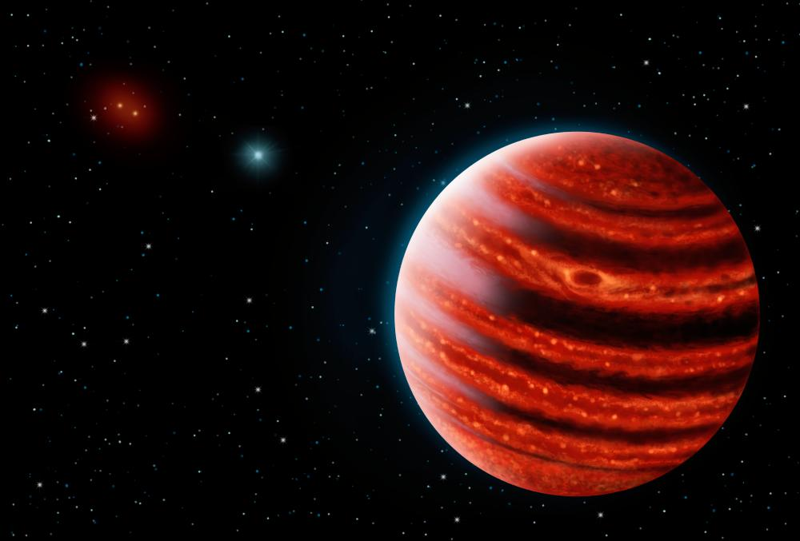

When you study the eight planets in the solar system, you quickly notice a peculiar separation between planet types: terrestrial planets (Mercury, Venus, Earth, and Mars) orbit near the Sun, while gas giants (Jupiter, Saturn, Uranus, and Neptune) orbit farther out. Why is that? Why do gas giants only orbit beyond the asteroid belt? Is this a unique feature of our solar system due to pure chance, or does a physical phenomenon cause the separation?
Let me tell you right now: gas giants—everywhere in the universe—can only form beyond a certain line, and that line is called the frost line. To understand the frost line, we have to first understand how the solar system formed. To do that, we have to go back… back 4.6 billion years. At that time, the Sun existed in its protostar phase and was surrounded by a solar nebula (a vast cloud of gas and dust). That solar nebula went on to form the eight planets, along with almost all the other celestial objects in the solar system.

The solar nebula was made up of roughly 98% hydrogen and helium, with trace amounts of heavier elements and metals. Closer to the Sun, water molecules couldn’t exist as liquids or solids because of the extreme heat, so they couldn’t clump together to form planets; heavier elements weren’t affected, which led to the terrestrial planets. Over time, the Sun’s radiation and solar wind pushed water and light gases like hydrogen and helium outward. Far from the Sun, water could condense as ice and begin to clump. As these icy bodies grew, their gravity let them attract lighter gases, and they went on to become gas giants. The specific point beyond which this process can occur is called the frost line.
While this frost line phenomenon is present in all solar systems, there are some exceptions—not to the physical rule itself, but to the locations of gas giants within their systems. It turns out that in some solar systems, gas giants orbit their host star at uncanny distances. Astronomers have named these planets hot Jupiters.
Hot Jupiters do not defy the laws of physics. Instead, they are caused by a migration where the planet moves from beyond the frost line to a location that is incredibly close to its star after it has already formed. What these migrations are caused by differs from case to case. Maybe it was due to a collision, or the planet was pulled closer by another object's gravity. Whatever the case might be, we know they are out there, and that is otherworldly if you ask me.